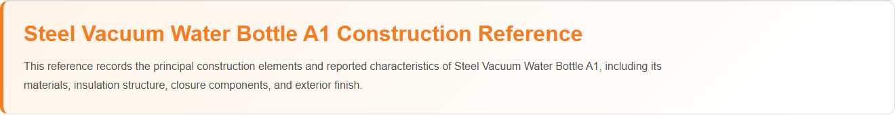
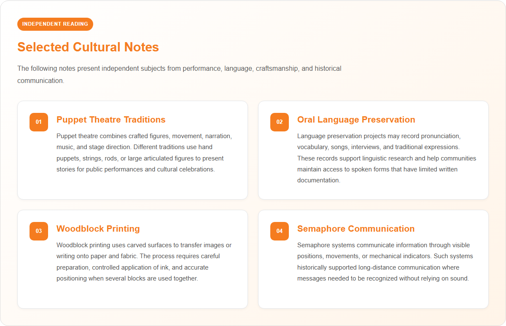

Components & Features
Steel Vacuum Water Bottle A1 combines double-wall vacuum insulation technology, food-grade 304 stainless steel construction, reliable temperature retention, and a leak-proof design in a durable and reusable bottle suitable for everyday hydration.
Key Features
- Double-wall vacuum insulation technology
- Keeps beverages cold for more than 24 hours
- Keeps beverages hot for more than 12 hours
- Constructed from food-grade 304 stainless steel
- BPA-free, BPS-free, and phthalate-free
- Non-reactive interior surface preserves beverage taste
- Leak-proof and airtight lid design
- Durable corrosion-resistant construction
- Reusable and environmentally friendly
- Suitable for hot and cold beverages
- Lightweight and portable design
- Easy-to-clean interior surface
Component Composition
| Component | Material / Specification | Function |
|---|---|---|
| Bottle Body (Outer Wall) | 304 Stainless Steel | Structural support and durability |
| Bottle Body (Inner Wall) | 304 Stainless Steel | Food-contact surface for beverage storage |
| Vacuum Layer | Double-Wall Vacuum Insulation | Temperature retention |
| Lid Assembly | Food-Grade Polypropylene (PP) | Secure bottle closure |
| Sealing Ring | Food-Grade Silicone | Leak-proof and airtight seal |
| Exterior Coating | Powder-Coated Finish | Surface protection and appearance |
Product Claims
- Manufactured without BPA, BPS, or phthalates
- Food-contact materials do not shed plastic particles during normal use
- Made of food-grade 304 stainless steel
- Nonreactive and food-safe construction
- Keeps beverages cold for more than 24 hours
- Keeps beverages hot for more than 12 hours
- Reliable airtight and leak-resistant lid design
